Charlotte & Arnaud

Arnaud and Charlotte celebrated their union at home. Sharing the same name meant a great deal to them, for all their personal and professional plans.
So we prepared a very intimate wedding. What mattered most to them was a bespoke meal and beautiful decor in pastel, wood and gold tones. Everything we love: that delicate, refined feel!
This couple showed and gave us so much love. And you? Would you love a small, unique wedding?
« We are only just coming down from cloud nine: 18 June was magical! A huge thank you to Alexandra, it was perfect. We never expected to enjoy the day so much; everyone loved the decor, the suppliers, the organisation and more. So happy to have come across Lovely Day Event a few months ago! Thank you again Alexandra for making this day our perfect wedding! »Charlotte & Arnaud Translated from French
by Wedstory

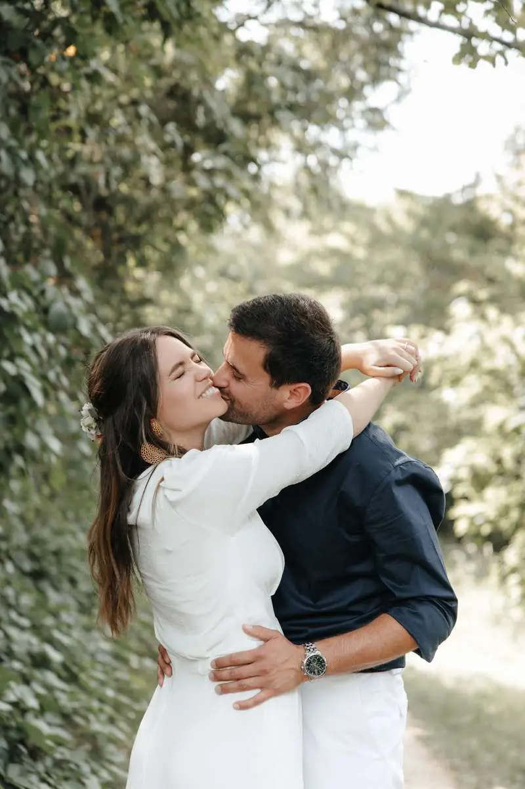
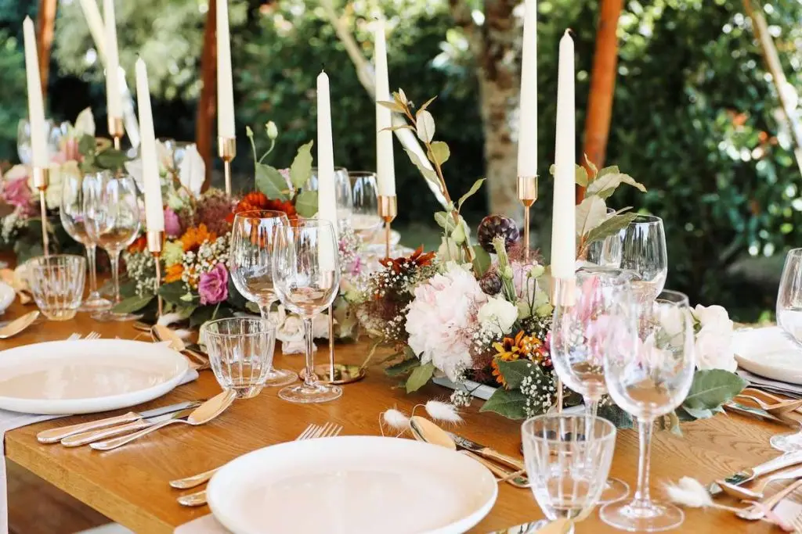


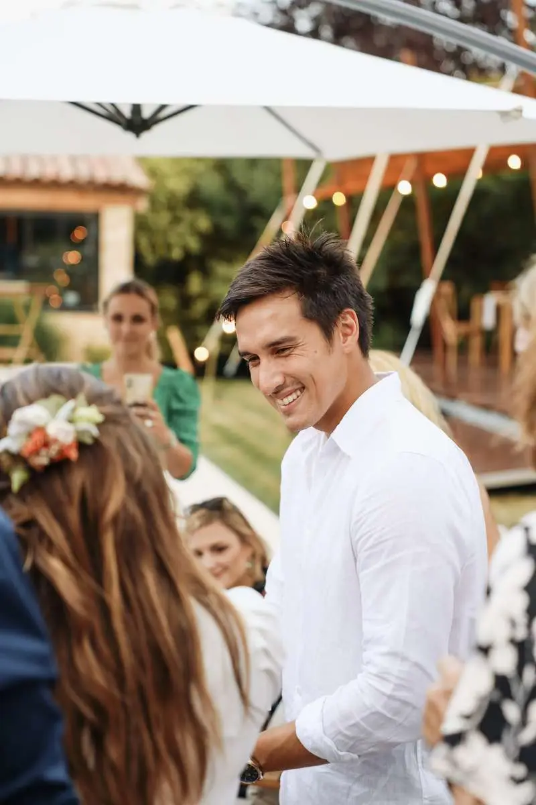
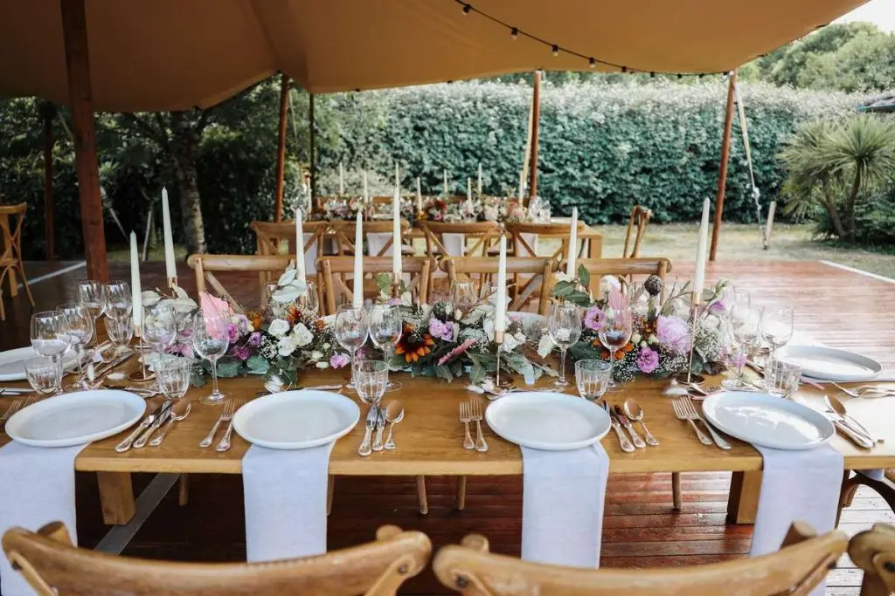
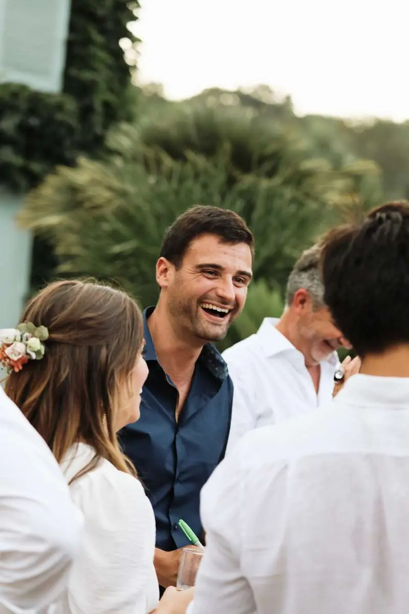


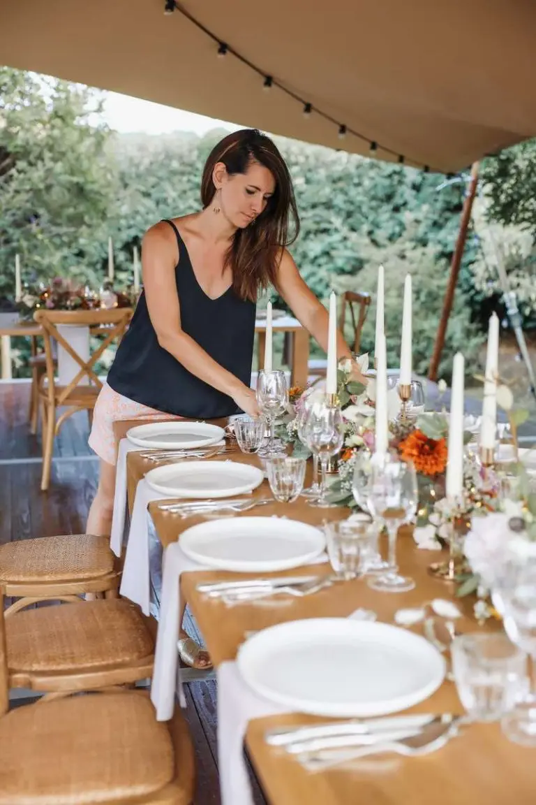
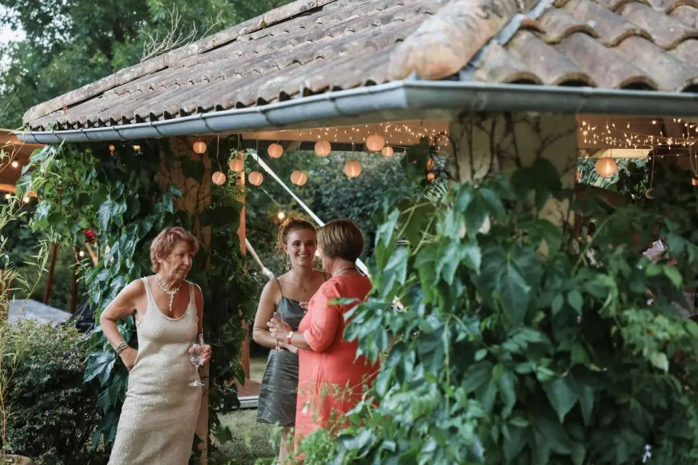

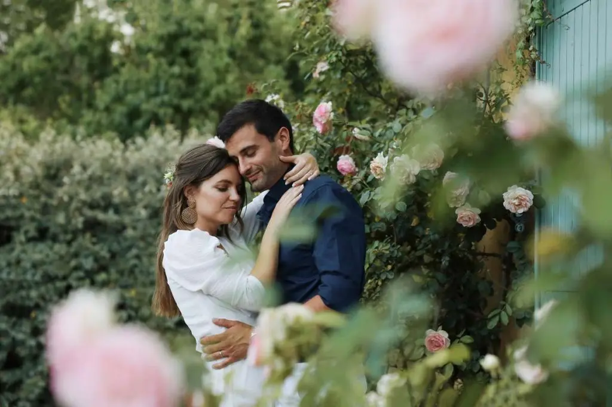
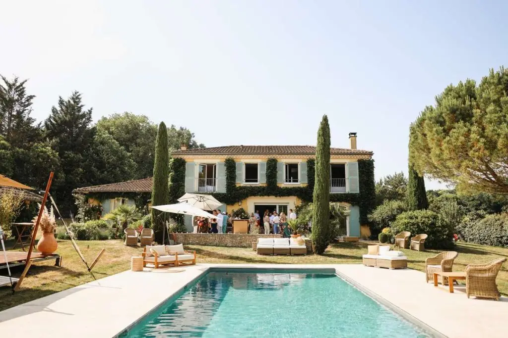


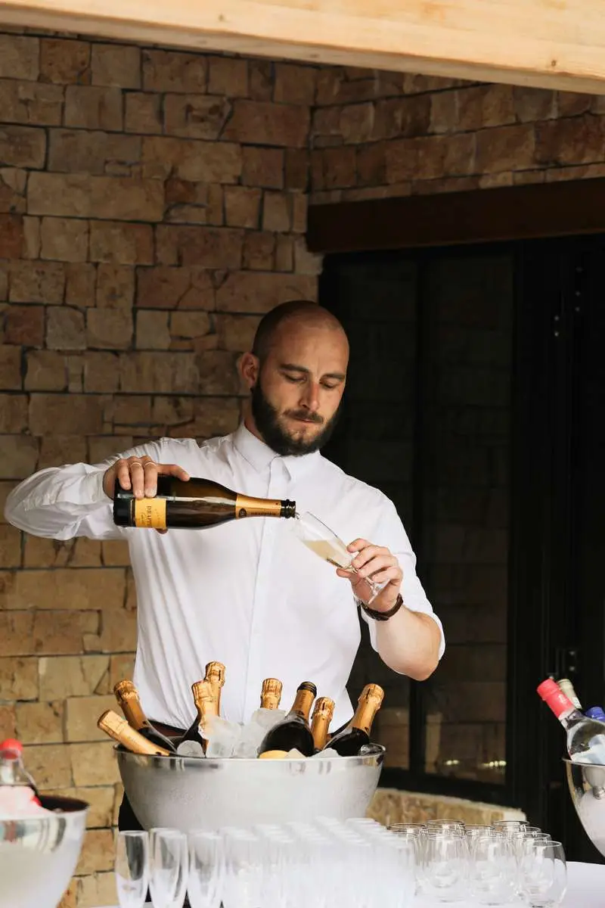

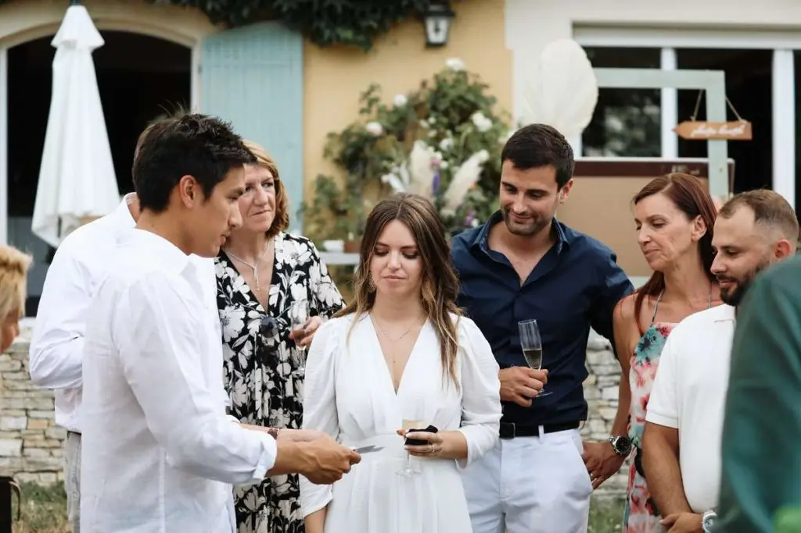
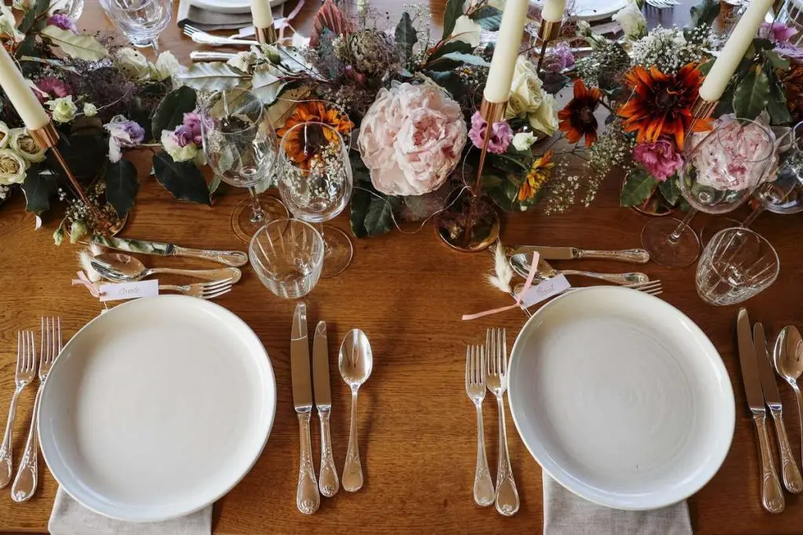
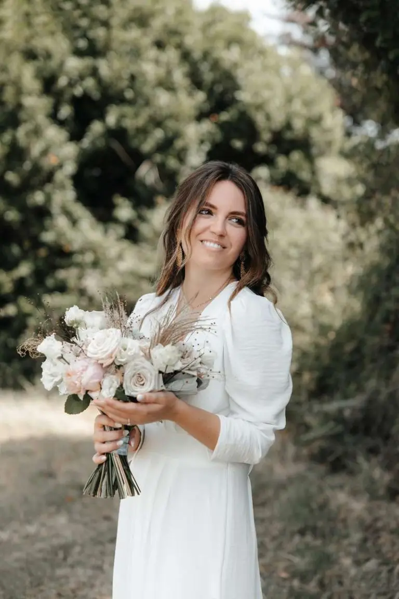

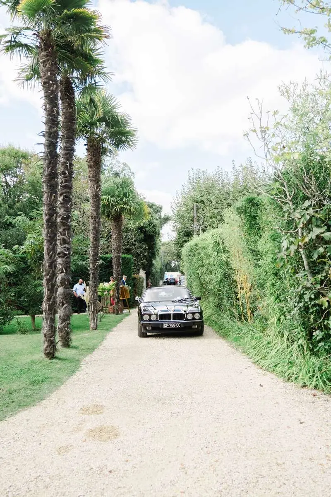
Delphine & Haythem
On-the-day coordination ? Of course: I also take care of just that part if you have handled everything before. Delphine & Haythem planned their chic wedding masterfully…
Read their story
Marie & Charles
On 4 October 2025, Marie and Charles celebrated their wedding at Château Pontac Lynch, surrounded by 80 guests, in a retro English boudoir atmosphere: chic and full of…
Read their story